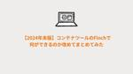
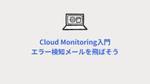
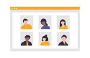
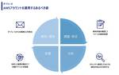
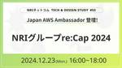
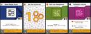
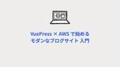
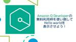

Technology - NRIネットコムBlog
https://tech.nri-net.com/archive/category/Technology
NRIネットコム社員が業務で利用している幅広い技術やナレッジについて紐解くブログメディアです。
フィード
【re:Invent 2024】APJ Kick Off Party に参加しました！
Technology - NRIネットコムBlog
こんにちは、西内です。 本記事執筆時点ではラスベガスからの帰路にあります。 1週間ずっと楽しく帰国が名残惜しい気持ちと、安くて美味しい日本食が恋しい気持ちがせめぎ合っています。 今回のre:InventではAPJ Kick Off Party というイベントに参加しましたので、どういったイベントだったかを書き残そうと思います。 APJ Kick Off Partyとは 参加当日までの流れ 会場の様子 な、なんともチャラいおしゃれ。。。 参加してみてどうだったか おまけ APJ Kick Off Partyとは APJ（アジア太平洋・日本）からのre:Invent参加者のみが参加可能な交流イベン…
6時間前

【2024年末版】コンテナツールのFinchで何ができるのか改めてまとめてみた
Technology - NRIネットコムBlog
本記事は 【Advent Calendar 2024】 10日目の記事です。 🌟🎄 9日目 ▶▶ 本記事 ▶▶ 11日目 🎅🎁 ozawaです。 先週末、息子に「今日ってなんがつ？」と聞かれたのでふとカレンダーを見ると12月になっていたので夫婦揃って「こっわ」と呟きました。 歳をとるって怖いですね。 年末になるとFinchのことが気になるので改めて今までの機能と最新アップデートも含めて、何ができるのかまとめてみました。 Finchとは Windowsのサポート Linuxのサポート DevcontainersへのFinch統合 SOCI snapshotterが利用可能 Credential …
6時間前

Cloud Monitoring入門 障害検知メールを飛ばそう 1
1
Technology - NRIネットコムBlog
本記事は 【Advent Calendar 2024】 9日目の記事です。 🌟🎄 8日目 ▶▶ 本記事 ▶▶ 10日目 🎅🎁 1. はじめに 2. 実装 2.1 インスタンス作成 補足 2.2 アラートポリシー作成 2.2.1 通知先の追加 2.2.2 HTTP監視エラーの通知設定 2.2.3 HTTP監視復旧の通知設定 2.3 メール確認 3. まとめ こんにちは。横田です。 本ブログでは、Google CloudのCloud Monitoringを使用してエラー検知メールを飛ばす方法について話します。 想定する読者層は以下の通りです。 Google Cloud勉強中の人 Cloud Mon…
1日前

パートナーさんと頑張るチーム活性化
Technology - NRIネットコムBlog
本記事は 【Advent Calendar 2024】 8日目の記事です。 🌟🎄 7日目 ▶▶ 本記事 ▶▶ 9日目 🎅🎁 こんにちは、システムエンジニアの檀上です。 普段は顧客の社内システムの要件調整・基本設計などを担当しています。 私はいま10名強のチームのチームリーダーの役割を担っており、チームはネットコムメンバーとパートナーメンバーがいますが、自由な会話が生まれにくい状態だったことが私の悩みでした。 レビューや相談にあたり、チームのコミュニケーションの活性化は必要不可欠です。 このため、チーム活性化について、社内研修を受講したり、本を読んだりと色々と知識を得ようとしました。 しかし、「…
2日前
天才の隣にいる凡人(自分)の成長について考えてみた
Technology - NRIネットコムBlog
本記事は 【Advent Calendar 2024】 7日目の記事です。 🌟🎄 6日目 ▶▶ 本記事 ▶▶ 8日目 🎅🎁 こんにちは、小山です。 寒くなってきましたね、おでんと熱燗であったまりましょう。 今回は、IT業界あるあるのめっちゃすごい人周りに多すぎ問題について、 自他ともに認める凡人の私が大真面目に考えてみた記事です。 この記事で伝えたいことと想定読者 すごいエンジニアが周りにいすぎた結果、 「この業界でやっていけるのかな…」「キャリアこのままで大丈夫かな…」と悩んでいる方を想定しています。 なお「この業界でやっていけるのかな…」は常に私が思ってることでもあります。(爆) 天才と凡…
3日前
Amazon Novaで新時代のNovaを作ってみた
Technology - NRIネットコムBlog
はじめに こんにちは、志水です。初めてre:Inventで5K run参加しました。自分は歩きますと行くメンバーに伝えていたのに、いざ出発すると周りが全く歩いてないので、即座に走り出してしまいました。日本人的な心が抜けてないようですね。 さて、待ちに待ったAWSの新しい基盤モデル、Amazon Novaがついに発表されました！テキスト・画像・動画を処理できる最新の基盤モデル群ということで、大きな期待が寄せられています。 aws.amazon.com 「Nova」と聞いて不思議と頭に思い浮かぶのは、ウサギですよね。これは運命的な出会いかもしれません。ということで、早速ウサギの動画を作ってみること…
4日前
DBアクセスが遅かったときに試したこと
Technology - NRIネットコムBlog
本記事は 【Advent Calendar 2024】 6日目の記事です。 🌟🎄 5日目 ▶▶ 本記事 ▶▶ 7日目 🎅🎁 こんにちは、システムエンジニアの上村です。 業務でインフラ再構築に携わることがあったのですが、その中でアプリの一部機能の処理が非常に遅いということが分かりました。 どこで遅くなっているのかを切り分けるため、DEBUGログを出力させて調査した結果、特定のSQL実行時に特に時間がかかっていることが分かりました。 そのSQL実行時間を改善するのに苦労したので、どうやって解決したかを書いていこうと思います。 前提 試したこと 統計情報の更新 実行計画の調査 DBスペックの向上 今…
4日前

Configの大量課金リスクと自動化のリスクへの具体的な対策 5
Technology - NRIネットコムBlog
こんにちは、大林です。JAWS-UG朝会 #63 で、「ガードレールの有用性とリスク対策」というタイトルで登壇してきました。ガードレールはアカウントを安全に運用する上で実装しておきたい仕組みですが、必ず理解しておくべきリスクもあります。本ブログでは、JAWS-UG朝会 #63で発表した内容を説明していきます。 jawsug-asa.connpass.com 発表資料 アカウント運用のあるべき姿 アカウント運用におけるコスト増加 アカウント運用の自動化によって発生するリスク 小さく自動化を進める ガードレールの大量課金リスク ガードレールの大量課金リスク対策 大量課金リスクへの予防策 まとめ 発…
5日前
『AWS CTO の Articles と見る AWS re:Invent 2020 - 2023』というタイトルで勉強会を開催しました
Technology - NRIネットコムBlog
こんにちは、AWS re:Invent は毎年日本からキャッチアップしている 丹（たん）です。 Japan AWS Ambassadors Advent Calendar 2024の5日目の記事です。 AWS re:Invent 2024 真っ最中ですね。Keynote が始まったところで、アップデート情報キャッチアップ中！！という方も多いのではないでしょうか。 Amazon S3 Tables Amazon S3 Metadata Amazon Aurora DSQL Amazon Nova Amazon Q Developer 等のGAやプレビュー、アップデートが続々と発表されています。 …
5日前

Japan AWS Ambassador登壇!NRIグループre:Cap 2024～NRIネットコム TECH AND DESIGN STUDY #53～
Technology - NRIネットコムBlog
こんにちは、ブログ運営担当の海野です。 12/23（月）16:00～18:00 当社主催の勉強会「NRIネットコム TECH & DESIGN STUDY #53」が開催されます!! 12月上旬に開催されたAWS最大のカンファレンスであるre:Invent。今年も当社社員を開催地ラスベガスへ派遣して生の情報を仕入れてきました! 今回の勉強会では、Japan AWS Ambassadorの2人が、re:Inventで発表された新機能やアップデート情報に加えて、現地でしか味わえないre:Inventの体験談などもお話しいたします! また、勉強会後半では、NRIグループ社員8名によるライトニングトー…
5日前
【re:Invent 2024】認定者ラウンジに入ってみた！
Technology - NRIネットコムBlog
こんにちは、絶賛ラスベガス満喫中の西内です。 まだカジノには手を出していませんが、帰国までにお財布を潤したいものです。 認定者ラウンジとは 入場まで ラウンジ内の様子 感想 認定者ラウンジとは re:Inventにてメイン会場で設置されているラウンジになります。 AWS認定資格を保有している人だけが入場できます。 なお、認定資格はPractionerでもProfessionalでも何でもOKです！ 入場まで 受付にてCredlyの画面を提示して、入場します。 Credlyはスマホアプリも提供されているので、そちらを入れるとよりスムーズに提示できると思います。 なお、入場受付するとLEGOブロッ…
5日前
Looker Studioのデータソースで BigQueryを使用する場合のテーブル設計のポイント
Technology - NRIネットコムBlog
本記事は 【Advent Calendar 2024】 5日目の記事です。 🌟🎄 4日目 ▶▶ 本記事 ▶▶ 6日目 🎅🎁 坂本です。 昨年に続いてAdvent Calendarに執筆させていただきます。 ※本記事は下記の2023-12-22に投稿した記事の続編になるため、ご覧になっていない方はまずこちらを参照していただけると幸いです。 Looker StudioのデータソースにBigQueryのテーブルを使用する - NRIネットコムBlog はじめに 集計していないテーブルを使用する場合 集計済のテーブルを使用した場合 集計済のテーブルを使用するデメリット まとめ はじめに Looker …
5日前

【楽しんで考える】AWS BuilderCardsの遊び方！【AWSアーキテクチャ】
Technology - NRIネットコムBlog
本記事は 【Advent Calendar 2024】 4日目の記事です。 🌟🎄 3日目 ▶▶ 本記事 ▶▶ 5日目 🎅🎁 はじめに ゲームの説明 AWS BuilderCardsってなに？ ゴール カードの種類 カードの説明 ゲーム場の説明 ゲームの進行 準備 ゲーム開始（以下のフェーズを各プレイヤーで繰り返していく） ゲーム終了 アーキテクチャ構築フェーズについて ビルダーカードを出した場合の効果について 実際にやってみた感想 TCGゲーマー目線でのポイント AWS初学者目線でのポイント より面白くするために（ネットコムローカルルール） 最後に はじめに お疲れ様です。当ブログで技術系の記…
6日前

VuePress × AWS で始めるモダンなブログサイト入門
Technology - NRIネットコムBlog
はじめに VuePress とは 主な機能 メリット VuePress でブログを作る 実行環境 ブログ構築の手順 ブログのカスタマイズ AWS でブログをホスティングする 必要な準備 Amazon S3 とAmazon CloudFront の作成 AWS CloudFormation テンプレート 静的ファイルのビルドとS3へのアップロード GitHub Actions で運用を自動化する まとめ 参考URL はじめに こんにちは、NRI ネットコムに新しくキャリアで入社しました永川です。普段はインフラエンジニアとして様々なシステムの開発・運用を担当しています。 今回は、VuePress …
7日前

Amazon Q Developerの無料利用枠を使い倒してHello worldを表示させよう！
Technology - NRIネットコムBlog
はじめに Amazon Q とは Amazon Q Business Amazon Q Develper Amazon Q Developerの使い方 事前準備 Amazon Qプラグインのインストール Spring InitializerでSpring Bootアプリケーションの作成 いざ使ってみよう！ 1. HelloWorldを表示させて 2. 起動方法を教えて 3. compose.yamlを追記して 4. Dockerファイルを作成して 5. タスクをINSERTするAPIを作成して まとめ ソースコード はじめに こんにちは！2024年度新入社員の松澤武志です！ 実はこの度 AWS…
7日前

AWS環境におけるランサムウェア攻撃対策の設計 /マルチアカウント環境におけるIAM Access Analyzerによる権限管理～NRIネットコム TECH AND DESIGN STUDY #52～
Technology - NRIネットコムBlog
今回のTECH & DESIGN STUDYは、当社クラウドエンジニアから、「AWS環境におけるランサムウェア攻撃対策の設計」と、「マルチアカウント環境におけるIAM Access Analyzerによる権限管理」についてお話します。 【1本目】AWS環境におけるランサムウェア攻撃対策の設計 ランサムウェア攻撃はAWS環境を脅かす存在です。大手企業の被害がメディアでも大きく報道されています。 攻撃を受けると、業務に不可欠なデータが暗号化され、解除のために身代金を要求される可能性があります。さらに、データの漏洩やシステム停止による業務中断、顧客信頼の喪失といった深刻な影響が生じることもあります。…
8日前
IT系における「軸」について
Technology - NRIネットコムBlog
本記事は 【Advent Calendar 2024】 2日目の記事です。 🌟🎄 1日目 ▶▶ 本記事 ▶▶ 3日目 🎅🎁 ネットコムの岩﨑です。もういくつか寝るとお正月ですね。皆さんはお正月には何をしますか？そうですね、コマを回して遊びますよね。コマは中心にある棒を「軸」として回転させることで楽しむ遊びです。というわけで、今回は「軸」についての話をしていきたいと思います。 この記事に書いてあること IT系の分野に出てくる「軸」について この記事に書いていないこと IT系以外の分野の「軸」について はじめに 座標軸とは 平面座標系の軸 三次元座標系の軸 IT系における座標軸とは IT系における…
8日前
2024 AWS Ambassador Global Summit レポート Day2-4
Technology - NRIネットコムBlog
はじめに 来週はラスベガスでre:Invent 2024が開催されますが、今回は2024年9月に参加してきたシアトルのAWS Ambassador Global Summitについてお伝えします。 1日目のシアトル到着からThe Spheres見学、日本のAmbassadorsとのディナーまでの様子は下記記事でお伝えしました。2日目以降は本格的なセッションが始まり、最新技術やビジネストレンドについて多くの学びがありましたので、その内容をご紹介したいと思います。 tech.nri-net.com セッション全体の傾向 昨年のAWS Ambassador Global Summitと比較して、今年…
11日前
ジェスチャー操作が広がる！WatchOS 11の新機能Double Tap API
Technology - NRIネットコムBlog
最新WatchOS 11の魅力—特に注目のDouble Tap APIについて、機能から実装方法まで詳しくご紹介します。
12日前
IT初心者が半年で基本情報技術者・AWS CLF・Ruby silverに合格した方法
Technology - NRIネットコムBlog
はじめに はじめまして、新入社員の熊です。 入社して半年の間に、文系卒の初心者としてIT業界での入門的な資格を3つ合格できたので、その経験談をシェアしていきたいと思います。 同じ資格の勉強をしている方・私と同じように勉強期間を先延ばしにしてしまう方・短期間で勉強を完結したい方の役に立てたらうれしいです。 はじめに 『彼を知り己を知れば百戦して殆うからず』 基本情報技術者 AWS Certified Cloud Practitioner Ruby Sliver 最後に ポイントまとめ 『彼を知り己を知れば百戦して殆うからず』 「敵と味方の情勢を熟知すれば、幾度戦争をしても間違いなく勝てる」という…
13日前
AWSに関するAI・機械学習用語集 - AWS Certified AI PractitionerとAWS Certified Machine Learning Engineer - Associateの学習過程で得られたナレッジ
Technology - NRIネットコムBlog
小西秀和です。 今回は新しく追加されたAWS認定であるAWS Certified AI PractitionerとAWS Certified Machine Learning Engineer - Associateに私が合格するまでの学習過程で得られたナレッジを「AWSに関するAI・機械学習用語集」として、ざっくりとまとめてみました。 この「AWSに関するAI・機械学習用語集」の内容は、日本の「技術書典17」向けに個人出版として共著した「AWSの薄い本の合本Vol.01」における「クイズで学ぶAWSの機能と歴史：厳選『機械学習』編」の問題・解答にも使用しています。 短時間にAI・機械学習の用…
14日前
AWSマンスリーアップデートピックアップ！！ 2024年11月分 ～NRIネットコム TECH AND DESIGN STUDY #51～
Technology - NRIネットコムBlog
こんにちは、ブログ運営担当の小嶋です。 12/11（水）12:00~12:30 当社主催の勉強会「NRIネットコム TECH & DESIGN STUDY #51」が開催されます!! 今回のTECH & DESIGN STUDYでは、日々数多く発表されているAWSのアップデートのうち、当社の腕利きエンジニア目線で厳選した前月のアップデート情報をお話させていただきます！ 【登壇者】 大林 優斗 インフラエンジニア 2024 Japan AWS Jr. Champions 執筆ブログ：https://tech.nri-net.com/archive/author/y-obayashi 【日程・タイ…
14日前
AI時代のITエンジニアの付加価値について
Technology - NRIネットコムBlog
こんにちは、佐々木です。 生成AIが台頭する中で、エンジニアの付加価値ってどうなるんだろう、ということを考える機会が多くなっています。頭の中で浮かんでいることを、ポエムっぽく吐き出してみます。なお、この文章の中で言及するエンジニアは、ITエンジニアが対象です。表現が冗長になるので、エンジニアと記載とさせて頂きます。 生成AIの台頭とエンジニア 改めて言う必要はないですが、近年の生成AIの進化は目覚ましいものがあります。画像生成、テキスト生成、さらには音声生成と、対応できる領域はどんどん広がっていっています。また、精度もどんどん向上し、分野によっては人間を凌駕する部分も出てきています。もちろん、…
18日前
Androidアプリの手書き表現とInk APIについて
Technology - NRIネットコムBlog
はじめに Ink APIとは 従来の課題 Ink APIが提供するもの サンプルコードを作成して動作を確認してみる さいごに 参考文献 はじめに こんにちは、最近キャリア採用でNRIネットコムに入社した磯川です。 今回初ブログということで、一番技術的に明るいAndroidアプリの内容にしたいと思います。 最近Jetpackライブラリにアルファ版が追加されたInk APIを触ってみたので、そちらについてまとめました。 Ink APIとは Ink APIは、Androidアプリに手書き入力やその描画機能といったインク表現をシンプルに実装するための新しいAPIとなっています。 今までは線を引くなどの…
18日前
『データ分析基盤を作ってみよう ～性能設計編～』というタイトルで勉強会を開催しました
Technology - NRIネットコムBlog
こんにちは、佐々木です。NRIネットコムの社外向け勉強会で、「データ分析基盤を作ってみよう ～性能測定編～」というタイトルで登壇してきました。その前に設計編というテーマで開催しており、今回はその続きです。アーキテクチャ設計をする上でAWSのサービスをどういう観点で評価するのか、またその裏付けを取るためにどうしているのかというのを実際の測定例とともに話しました。 発表資料と当日の動画 当日の発表資料と動画です。 speakerdeck.com www.youtube.com アーキテクチャの選定について アーキテクチャ選定の部分で取り上げたのが、BIツールでダッシュボードを作ってデータを可視化す…
18日前
VPC LatticeよくわからなかったがECSとネイティブ統合したので試してみた
Technology - NRIネットコムBlog
ozawaです。めっきり寒くなりました。子供の保育園の送迎時はネックウォーマーにマスク、帽子と完全防備です。不審者感が増しました。 最近re:Inventのおこぼれ的なアップデートがよく出てきていますが、今回はECS関連で気になるアップデートがあったのでまとめてみます。 VPC LatticeとECSがネイティブ統合されました！ VPC Latticeとは VPC Latticeの概念 サービスネットワーク サービス ターゲットグループ ECSとのネイティブ統合 実際にやってみた ECSの設定 VPC Lattice統合を有効化 VPC Latticeの設定 サービスネットワークの作成 サービ…
18日前
意外とややこしいAmazon GuardDuty Runtime Monitoring / 一歩進んだAWSのコスト削減～NRIネットコム TECH AND DESIGN STUDY #50～
Technology - NRIネットコムBlog
こんにちは、ブログ運営担当の小野です。 11/27（水）19:00~20:00 当社主催の勉強会「NRIネットコム TECH & DESIGN STUDY #50」が開催されます!! 発表概要 今回のTECH & DESIGN STUDYは、当社クラウドエンジニアから、「意外とややこしいAmazon GuardDuty Runtime Monitoring」と、「一歩進んだAWSのコスト削減」についてお話します。 【1本目】 意外とややこしいAmazon GuardDuty Runtime Monitoring 昨年のre:Inventで発表されたAmazon GuardDutyの新機能「Ru…
21日前
「AWSの薄い本の合本Vol.01」で「第 4 章 CloudFormation StackSets でマルチアカウント統制」を書きました
Technology - NRIネットコムBlog
西内です。 技術書典17（オフライン開催：2024/11/03、オンライン開催：2024/11/02～2024/11/17）で発表される「AWSの薄い本の合本Vol.01」に共著として参加しました。 第 4 章 の「CloudFormation StackSets でマルチアカウント統制」を書きました。 今回私が担当した箇所の紹介をしていきます。 techbookfest.org AWSの薄い本の合本Vol.01の章構成 第1章 S3 を安全に使うための 10 の約束(執筆:佐々木拓郎) 第2章 Security Hub を最大限活用するためのポイント(執筆:大林優斗) 第3章 IAM ベスト…
25日前
「AWSの薄い本の合本Vol.01」で「第 2 章 Security Hub を最大限活用するためのポイント」を書きました
Technology - NRIネットコムBlog
大林です。 技術書典17（オフライン開催：2024/11/03、オンライン開催：2024/11/02～2024/11/17）で発表される「AWSの薄い本の合本Vol.01」に共著として参加しました。 第 2 章 の「Security Hub を最大限活用するためのポイント」を書きました。 今回私が担当した箇所の紹介をしていきます。 techbookfest.org AWSの薄い本の合本Vol.01の章構成 第1章 S3 を安全に使うための 10 の約束(執筆:佐々木拓郎) 第2章 Security Hub を最大限活用するためのポイント(執筆:大林優斗) 第3章 IAM ベストプラクティスと …
1ヶ月前
「AWSの薄い本の合本Vol.01」で「第6章 マルチステージビルドで学ぶ Docker のイメージ軽量化」を書きました
Technology - NRIネットコムBlog
はじめに こんにちは、小山です。 技術書典17（オフライン開催：2024/11/03、オンライン開催：2024/11/02～2024/11/17）で発表される「AWSの薄い本の合本Vol.01」に共著として参加しました。 「マルチステージビルドで学ぶ Docker のイメージ軽量化」という章を書きました。 担当箇所の紹介とこれから執筆やアウトプットをする人のために、次回執筆のテックブログで今回のしくじりを少し書こうと思います。 AWSの薄い本の合本Vol.01の章構成 第1章 S3 を安全に使うための 10 の約束(執筆:佐々木拓郎) 第2章 Security Hub を最大限活用するためのポ…
1ヶ月前